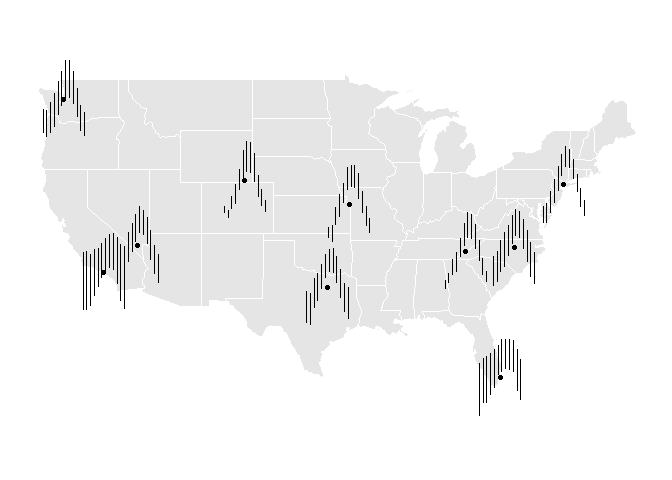
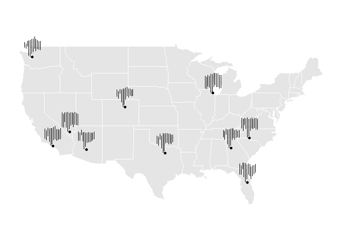

The goal of stglpyhs is to introduce new ways of visualizing spatio-temporal data and in particular analyzing across multivariate seasonal data. The existing cubble package implements glyph maps in the form of line graphs. This project seeks to expand this functionality to segment plots to visualize multivariable data better and analyze seasonal trends.
Installation
You can install the development version of stglpyhs from GitHub with:
# install.packages("devtools")
devtools::install_github("Knicey/stglyphs")Example
This is an example which displays seasonal mins and maxes in temperature from NOAA across the US:
library(stglpyhs)
library(ggplot2)
library(dplyr, warn.conflicts = FALSE)
stations_grouped <- stations |>
group_by(month, name, long, lat) |>
summarise(
avgmin = mean(tmin, na.rm = TRUE),
avgmax = mean(tmax, na.rm = TRUE)
)
ggplot(data = stations_grouped) +
geom_sf(data = mainland_us, color = "white") +
ggthemes::theme_map() +
geom_point(aes(x = long, y = lat)) +
geom_segment_glyph(
x_scale = rescale11x,
y_scale = rescale11y,
global_rescale = FALSE,
width = 2,
height = 3,
aes(
x_major = long,
y_major = lat,
x_minor = month,
y_minor = avgmin,
yend_minor = avgmax)
) 
This is another example that shows flight cancellations from the airports that have the most flight cancellations:
library(lubridate, warn.conflicts = FALSE)
flights_grouped <- flights |>
mutate(
month = month(FL_DATE),
year = year(FL_DATE)
) |>
group_by(ORIGIN, month, year, longitude, latitude) |>
summarise(
total_flights = n()
) |>
group_by(ORIGIN, month, longitude, latitude) |>
summarise(
max = max(total_flights),
min = min(total_flights),
)
ggplot(data = flights_grouped) +
geom_sf(data = mainland_us, color = "white") +
ggthemes::theme_map() +
geom_point(aes(x = longitude, y = latitude)) +
geom_segment_glyph(
x_scale = rescale11x,
y_scale = rescale01y,
global_rescale = FALSE,
width = 1.5,
height = 3,
aes(
x_major = longitude,
y_major = latitude,
x_minor = month,
y_minor = min,
yend_minor = max)
) 